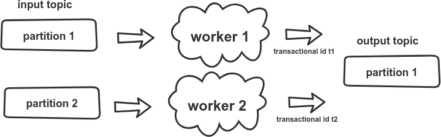
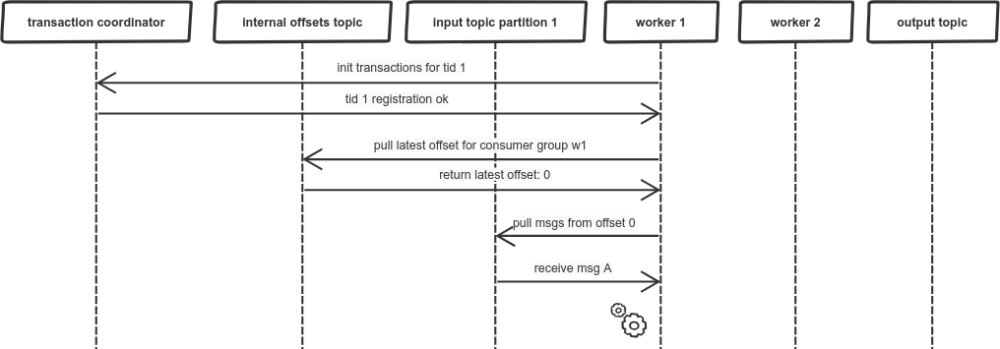
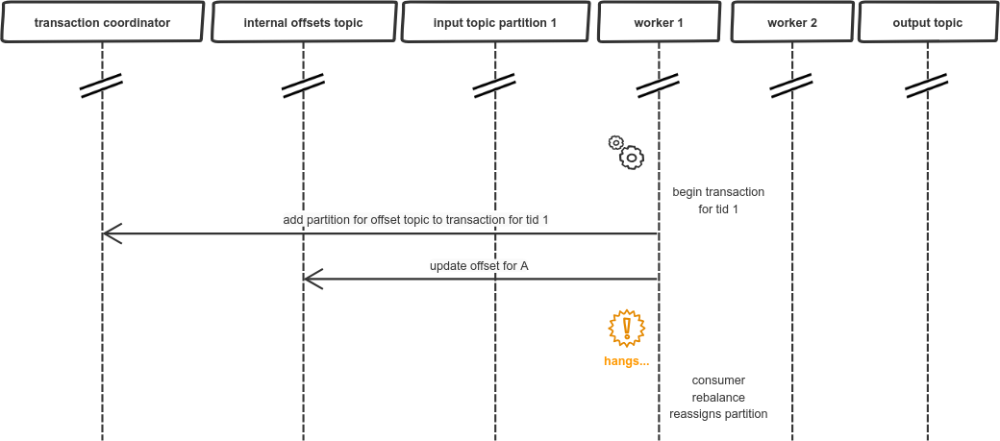
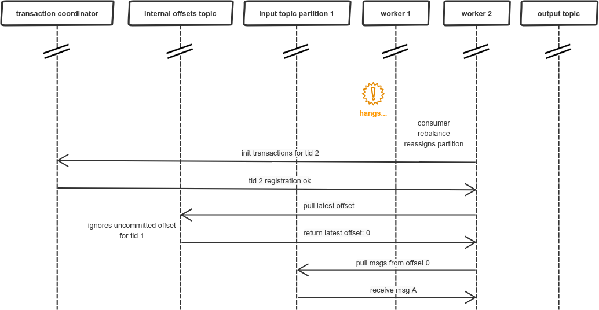
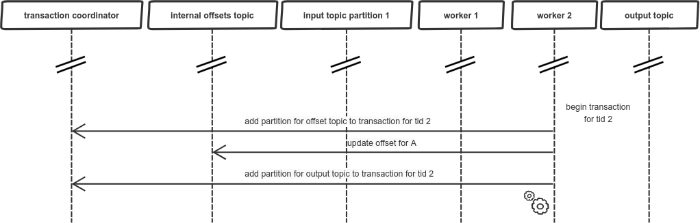
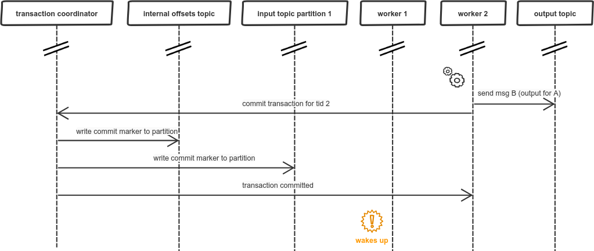
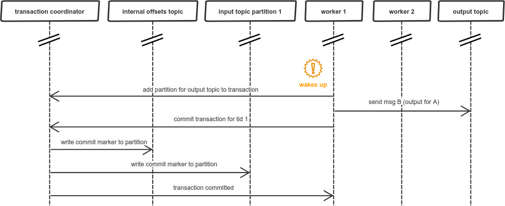
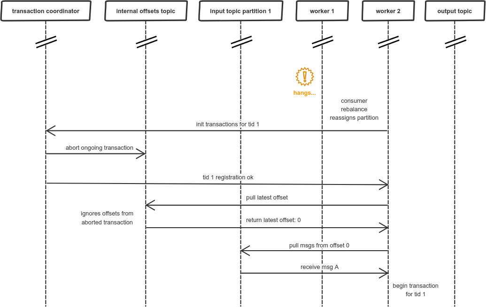
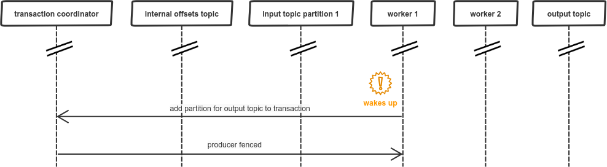

Why should you use separate transactional Kafka producer per consumer group and partition?
1. Intro
This blog post attempts to explain in detail one thing that was at first for me unclear. For example in a Confluent article about Kafka transactions, a short description of the problem can be found:
For instance, in a distributed stream processing application, suppose topic-partition tp0 was originally processed by transactional.id T0. If, at some point later, it could be mapped to another producer with transactional.id T1, there would be no fencing between T0 and T1. So it is possible for messages from tp0 to be reprocessed, violating the exactly once processing guarantee.
Practically, one would either have to store the mapping between input partitions and transactional.ids in an external store, or have some static encoding of it.
Quite similar explanation was given in Spring docs:
2.1.11 Transactional Id When a transaction is started by the listener container, the transactional.id is now the transactionIdPrefix appended with <group.id>.<topic>.<partition>. This is to allow proper fencing of zombies as described here.
So, what I could understand is that I should use separate transactional ids for each partition consumed, to enable proper zombie fencing and prevent duplicate messages. Next point will present the scenario, where this is necessary.
The assumption is that the reader already knows about Kafka basics (eg partitions, consumer groups) and has read about Kafka transactions on Confluent’s blog.
2. Failure of transactions caused by invalid usage
Here is the setup in which this fault might occur:

In this case, following scenario will cause problems, we start with standard initialization of transactions and pulling the message for latest offset:

Then, we proceed to processing the message. We start a transaction, to send the output message atomically with updating the offset, first sending the offset:

Just after sending the offset, our worker hangs, e.g. due to long GC pause, and then the consumer group coordinator reassigns the partition to another worker:

As a result, another worker goes through similar initialization process, as previous worker. The problem is that previous transaction is not yet committed, so the offset update sent by worker 1 is ignored. And now, worker 2 is starting its own transaction:

Then, worker 2 sends processing results to the output topic and commits its transaction:

When worker 2 is already done, worker 1 wakes up from its long GC pause, unaware of what happened in the meantime, this “nap” seemed like just few milliseconds… so it continues with its own transaction and sends the output message:

After worker 1 commits the transaction there is a duplicated message in the output topic, so our exactly-once guarantee does not hold.
3. Why Kafka transactions didn’t work correctly in this situation?
At the moment when worker 2 is assigned the input partition from worker 1 and initializes transaction, the Kafka transaction for worker 2 should be aborted. Overall, this is how it should look like inside the Kafka’s topic:
$ ./bin/kafka-dump-log.sh --files /tmp/kafka-logs/topic-test-0/00000000000000000000.log \
> --print-data-log
Dumping /tmp/kafka-logs/topic-test-0/00000000000000000000.log
Starting offset: 0
offset: 0 ... producerId: 0 producerEpoch: 5 ... payload: thisIsMessageValue1
offset: 1 ... producerId: 0 producerEpoch: 6 ... endTxnMarker: ABORT coordinatorEpoch: 0
offset: 2 ... producerId: 0 producerEpoch: 7 ... payload: thisIsMessageValue2
offset: 3 ... producerId: 0 producerEpoch: 7 ... endTxnMarker: COMMIT coordinatorEpoch: 0When we look closer, we can notice that all the messages were sent with the same producerId. This is the code used to get the above:
Map<String, Object> configs = new HashMap<>();
configs.put(ProducerConfig.BOOTSTRAP_SERVERS_CONFIG, "localhost:9092");
configs.put(ProducerConfig.KEY_SERIALIZER_CLASS_CONFIG, StringSerializer.class);
configs.put(ProducerConfig.VALUE_SERIALIZER_CLASS_CONFIG, StringSerializer.class);
configs.put(ProducerConfig.TRANSACTIONAL_ID_CONFIG, "anyValue");
KafkaProducer<String, String> producer = new KafkaProducer<>(configs);
producer.initTransactions();
producer.beginTransaction();
producer.send(new ProducerRecord<>("topic-test", "thisIsMessageKey", "thisIsMessageValue1")).get();
KafkaProducer<String, String> producer2 = new KafkaProducer<>(configs);
producer2.initTransactions();
producer2.beginTransaction();
producer2.send(new ProducerRecord<>("topic-test", "thisIsMessageKey", "thisIsMessageValue2")).get();
producer2.commitTransaction();If, however, we change the producer’s transactional id:
...
configs.put(ProducerConfig.TRANSACTIONAL_ID_CONFIG, "differentValue");
KafkaProducer<String, String> producer2 = new KafkaProducer<>(configs);
producer2.initTransactions();
...Then, we will get the below output:
$ ./bin/kafka-dump-log.sh --files /tmp/kafka-logs/topic-test-0/00000000000000000000.log \
> --print-data-log
Dumping /tmp/kafka-logs/topic-test-0/00000000000000000000.log
Starting offset: 0
offset: 0 ... producerId: 0 producerEpoch: 0 ... payload: thisIsMessageValue1
offset: 1 ... producerId: 1 producerEpoch: 0 ... payload: thisIsMessageValue2
offset: 2 ... producerId: 1 producerEpoch: 0 ... endTxnMarker: COMMIT coordinatorEpoch: 0Which looks similar to our scenario with 2 parallel workers. What happens above is a failure of the zombie fencing mechanism, which is described in the Confluent’s article on Kafka transactions.
4. Fixing Kafka zombie fencing for parallel processing
The solution to this problem is already mentioned in the docs and articles:
Practically, one would either have to store the mapping between input partitions and transactional.ids in an external store, or have some static encoding of it.
To avoid handling an external store, we will use a static encoding the same as in spring-kafka:
the transactional.id is now the transactionIdPrefix appended with <group.id>.<topic>.<partition>.
The drawback is that we will require separate transactional producer for each partition, but now we will be able to handle the last failure scenario correctly. This can be observed at the moment, when worker 2 initiates its transactional producer:

And then, when worker 1 wakes up:

Which results in receiving this exception within application:
org.apache.kafka.common.errors.ProducerFencedException: Producer attempted an operation with
an old epoch. Either there is a newer producer with the same transactionalId, or the producer's
transaction has been expired by the broker.Zombie fencing works properly now, thanks to using the same transactional id.
5. Summary
Handling transactions between producer sessions has its own nuances. One of our decisions, as Kafka clients, is to pick right transactional ids for producer, to enable proper zombie fencing. Hopefully, the example given above makes it clear when should we use separate transactional id for each consumed partition. Only when consumer rebalance can result in assigning partitions to different workers those separate ids should be used.